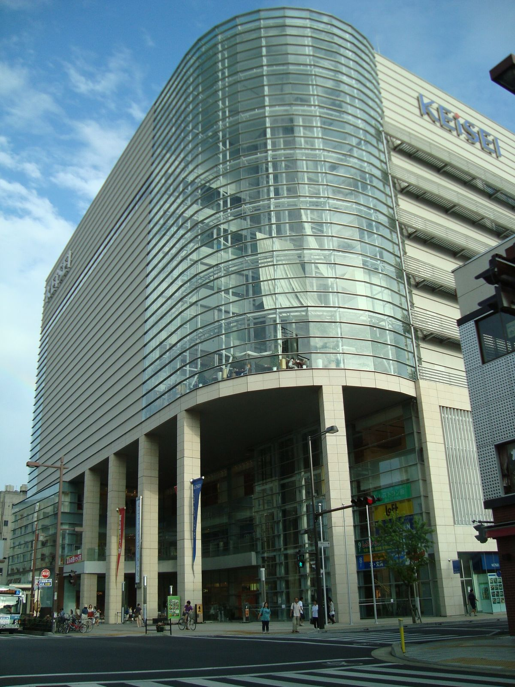
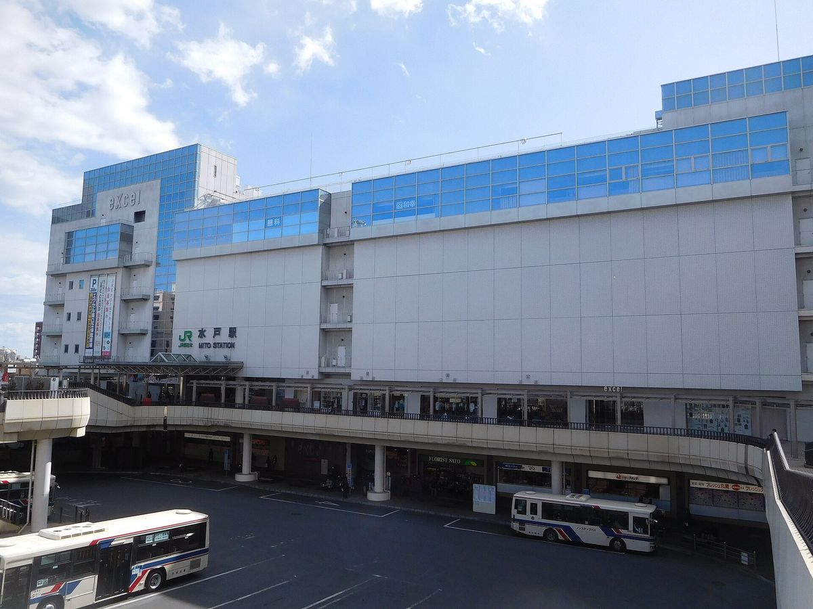

01
展示
KUSURIYA EXHIBITION
京成百貨店（水戸）10:30–19:00
TVアニメ『薬屋のひとりごと』展の会場。7階特設会場。会期は 2026年12月19日（土）〜2027年1月12日（火）。
1/1は店休日。最終日は16:00閉場、12/31・1/2・1/3は18:00閉場。前売券はローチケ（Lコード 35349）で一般1,800円、12/18 23:59まで。当日券もあり。水戸駅北口からバス約7分「泉町1丁目」下車、徒歩約17分。
展示と映画と、あんこう鍋。ヨシくんへのお誘いページ


展示＋映画＋あんこう鍋を水戸で一日で回るコース。都合のいい日を教えてください。
展示の前売券は 12/18（金）23:59 まで（ローチケ Lコード 35349、一般 1,800円）。日程が決まれば前売りが確実です。
映画を都内で先に観て、展示は別日に水戸へ行く2回コースもできます。映画の候補日はこちら。
ピンをタップすると名前が出て、もう一度タップするとその場所へ移動します。
略図です（縮尺は正確ではありません）。水戸駅から京成百貨店はバス約7分、映画館は水戸駅南口直結です。
TVアニメ『薬屋のひとりごと』展の会場。7階特設会場。会期は 2026年12月19日（土）〜2027年1月12日（火）。
1/1は店休日。最終日は16:00閉場、12/31・1/2・1/3は18:00閉場。前売券はローチケ（Lコード 35349）で一般1,800円、12/18 23:59まで。当日券もあり。水戸駅北口からバス約7分「泉町1丁目」下車、徒歩約17分。
劇場版『薬屋のひとりごと 亡妃の秘宝』（12/11公開）を観る映画館。水戸駅南口ペデストリアンデッキ直結のCOMBOX310内（3F・4F）で、駅からの移動がほぼゼロ。
上映時間は公開後に劇場スケジュールで確定します。日程が決まったら近い時間の回に合わせて当日の順番を調整します。内原のTOHOシネマズ水戸内原も候補ですが、駅直結のこちらが本命です。
冬の水戸といえばあんこう鍋。展示会場の近くで2店。タップするとGoogleマップが開きます。
山翠：泉町2-2-40（京成百貨店のすぐ先）。元祖あんこう鍋 4,300円。夜は17:00–21:00、定休日は月・火。魚政：大工町2-1-23。あんこう鍋と納豆のコースあり。夜は17:00–22:00（土日は21:00まで）、12/30–1/4は年末年始休み、12月は日曜休み。どちらも予約が確実です。
写真はすべて Wikimedia Commons：京成百貨店＝ほぶ（Public domain）、あんこうのどぶ汁＝hirotomo（CC BY-SA 2.0）、水戸駅北口＝Miyuki Meinaka（CC BY-SA 4.0）、COMBOX310＝Asturio Cantabrio（CC BY-SA 4.0）、納豆＝Gleam（CC BY-SA 3.0）。営業時間・休業日は各公式サイトと食べログ等で 2026年11月22日 に確認。展示の会期・チケットは展覧会公式とローチケの情報。映画の上映時間は公開後に確定します。地図は略図で縮尺は正確ではありません。時刻は目安で当日に前後します。